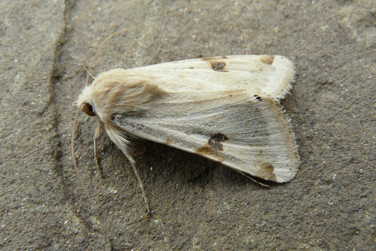
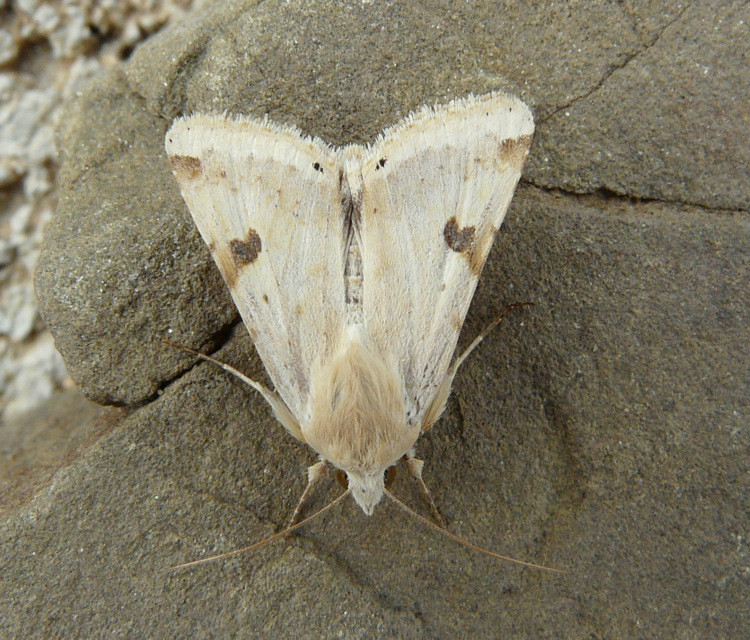
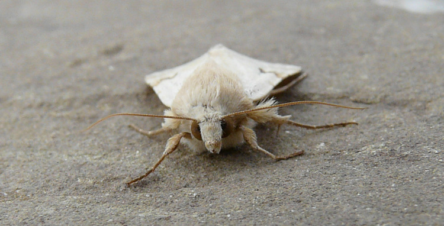
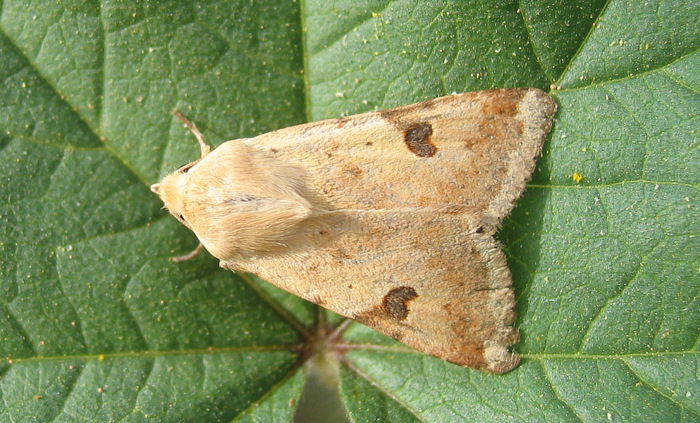
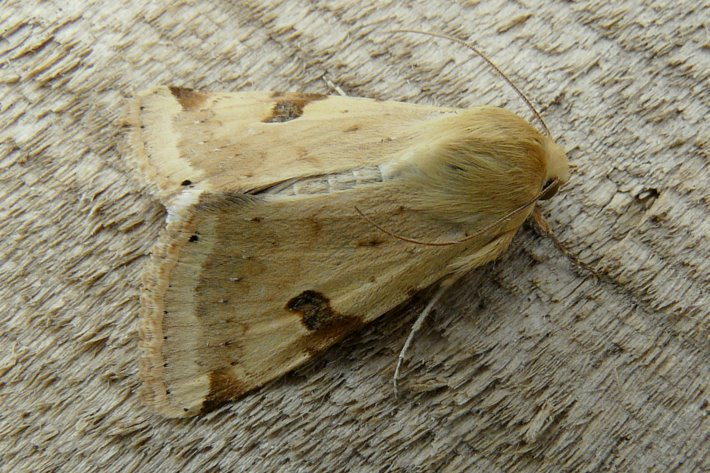
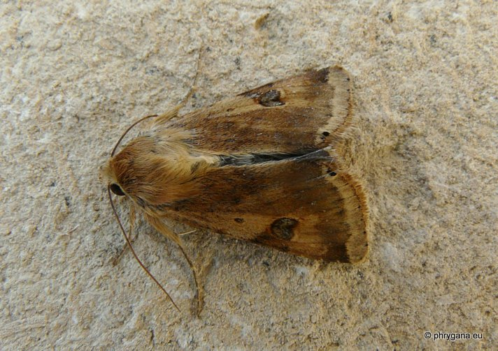
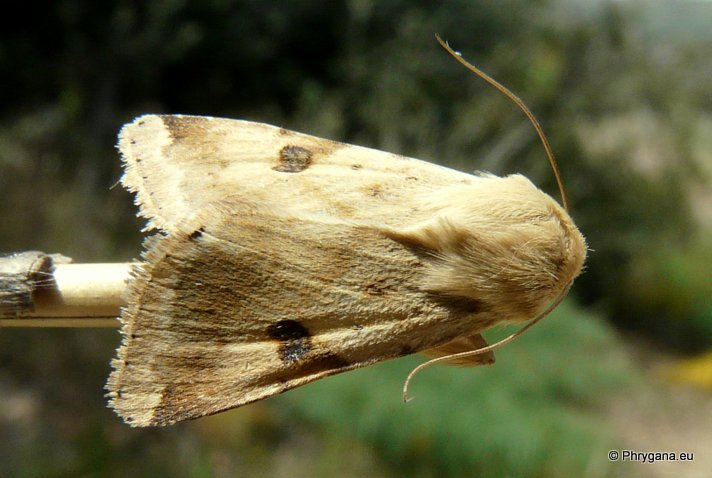

| PHRYGANA | Fauna | Flora | Galles | liste des espèces |
contact -
info - commentaires phrygana1 (at) gmail.com |
| Particularités crétoises | nouveautés | Mines | ressources naturelles |
| Heliothis peltigera (Denis & Schiffermuller 1775) |
| 89 | Fauna | NOCTUIDAE | Heliothinae | Heliothis Ochsenheimer 1816 |
 Heliothis peltigera Melambes (Agios Giorgos) 21 janvier 2010 |
| Bordered Straw -- la Noctuelle peltigère -- Vlekdaguil -- Bilsenkraut-Blüteneule |
| Envergure: 36 - 42 mm; couleur de fond sable jaunâtre à jaune brun; réniforme bien marquée, prolongée vers le bord extérieur par une suffusion brunâtre; aile postérieure avec une bande brun noir le long du bord extérieur |
| Adulte: vit 3 - 4 semaines. La femelle peut pondre jusqu'à 2000 oeufs. |
| Chenille: polyphage sur herbacées; nymphose dans le sol. |
| Espèce plurivoltine |
| Période de vol: janvier mars avril mai juin juillet août septembre octobre novembre décembre |
| Statut en Crète: indigène |
| Biotopes en Crète: phrygana, olivaies, garrigue, jardins, parcs, cultures. |
| Distribution: Europe méridionale orientale, Moyen-Orient, Asie mineure, Amérique du nord. |
| Note: migrateur occasionnel |
| Note: peut être un ravageur des cultures maraîchères |
| Larve polyphage: large éventail de plantes herbacées dont: (Calendula sp. (Calendula arvensis), Anthemis sp., Lamiaceae, Solanum lycopersicum) | ||
|
|
||
| Calendula arvensis | ||
|
 Heliothis peltigera Melambes (Agios Giorgos) 21 janvier 2010 |
|
 Heliothis peltigera Melambes (Agios Giorgos) 21 janvier 2010 |
|
 Heliothis peltigera Agia Galini 23 avril 2008 |
|
 Heliothis peltigera Agios Giorgos (Melambes) 30 décembre 2010 |
|
 Heliothis peltigera Agios Giorgos (Melambes) 15 mars 2011 |
|
 Heliothis peltigera Agios Giorgos (Melambes) 31 mars 2013 |
| 07 avril 2013 |
| © paul fontaine -- © Phrygana.eu 2007 -- 2013 |